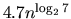
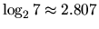
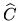

The Level 3 BLAS specifications [40] specify the input, output and calling sequence for each routine, but allow freedom of implementation, subject to the requirement that the routines be numerically stable. Level 3 BLAS implementations can therefore be built using matrix multiplication algorithms that achieve a more favorable operation count (for suitable dimensions) than the standard multiplication technique, provided that these ``fast'' algorithms are numerically stable. The simplest fast matrix multiplication technique is Strassen's method, which can multiply two n-by-n matrices in fewer than  operations, where .
The effect on the results in this chapter of using a fast Level 3 BLAS implementation can be explained as follows. In general, reasonably implemented fast Level 3 BLAS preserve all the bounds presented here (except those at the end of subsection 4.10), but the constant p(n) may increase somewhat. Also, the iterative refinement routine xyyRFS may take more steps to converge.
This is what we mean by reasonably implemented fast Level 3 BLAS. Here, ci denotes a constant depending on the specified matrix dimensions.
(1) If A is m-by-n, B is n-by-p and 
is the computed
approximation to C=AB, then
(2)
The computed solution  to the triangular systems TX=B,
where T is m-by-m and B is m-by-p, satisfies
to the triangular systems TX=B,
where T is m-by-m and B is m-by-p, satisfies
For further details, and references to fast multiplication techniques, see [27].